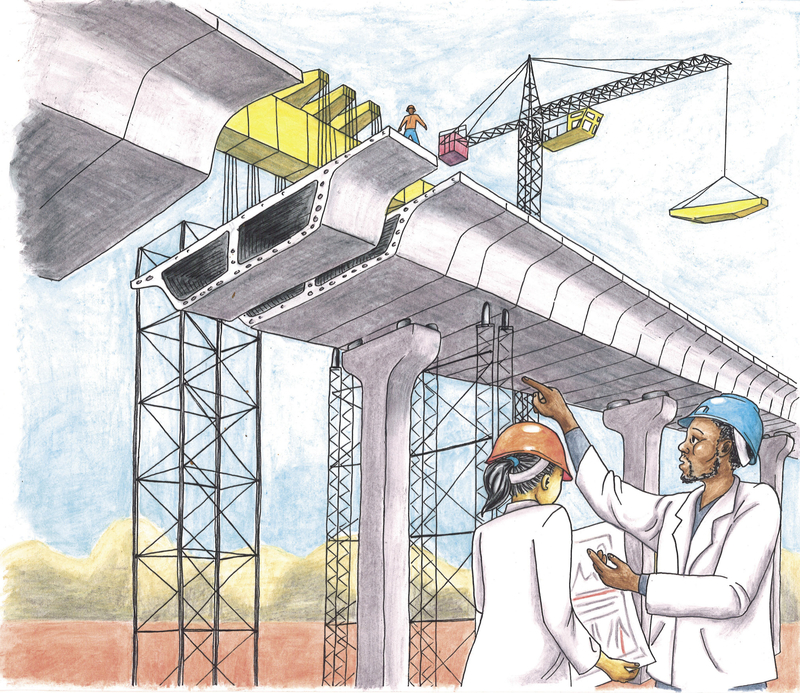

Wat is tegnologie?

Figuur 1
Natuurlike materiale word op verskillende maniere verander om mens- gemaakte materiaal te vervaardig.
Figuur 8: Huis A
Figuur 9: Huis B
Figuur 10: Huis C
Figuur 11: Huis D
-
Watter materiaal is gebruik om die huis in Figuur 8 te bou?
-
Is hierdie materiaal mensgemaak of natuurlik?
-
Watter gereedskap gebruik die mense wat die huis in Figuur 8 bou?
-
Watter materiaal is gebruik om die huis in Figuur 9 te bou?
-
Is dit mensgemaakte materiaal of natuurlike materiaal?
-
Watter gereedskap gebruik die mense wat die huis in Figuur 9 bou?
-
Watter materiaal is gebruik om die huis in Figuur 10 te bou?
-
Is dit mensgemaakte materiaal of natuurlike materiaal?
-
Watter gereedskap gebruik die mense wat die huis in Figuur 10 bou?
-
Watter materiaal is gebruik om die huis in Figuur 11 te bou?
-
Is dit 'n mensgemaakte materiaal of 'n natuurlike materiaal?
-
Watter gereedskap gebruik die mense wat die huis in Figuur 11 bou?
Party gereedskapstukke soos messe en vurke en lepels, is maklik om te gebruik. Ander gereedskapstukke, soos skêre en skroewedraaiers, is 'n bietjie moeiliker om te gebruik. Ander gereedskapstukke is nóg moeiliker om te gebruik, byvoorbeeld 'n kragboor. 'n Persoon wat sulke gereedskapstukke wil gebruik, moet opgelei wees.
Een ding wat baie mense doen, is om praktiese oplossings vir probleme te ontwikkel sodat mense die goed kan kry wat hulle wil hê en benodig. Om dit te doen gebruik mense hulle kennis en vaardighede. Hulle gebruik ook gereedskap en materiale. Wanneer oplossings vir probleme gesoek word, moet mense probeer om nie die omgewing te beskadig nie, en die behoeftes en veiligheid van individue, gesinne en gemeenskappe in gedagte te hou.
Al hierdie dinge saam word Tegnologie genoem.
In 'n spesifieke klein dorpie kry die mense hulle water uit 'n dam omtrent 3 km daarvandaan. Maar toe tref 'n ramp die dorpie, en die damwal breek tydens 'n vloed. Dit sal twee jaar neem om dit te herbou. Gelukkig is daar 'n ou put naby die dorpie met genoeg goeie water om in al die dorpsmense se behoeftes te voorsien. Die put is egter baie diep en daar is geen manier om die water na bo te kry nie. Die dorpie is ook in 'n landelike gebied met geen elektrisiteit nie.
Wat dink jy kan gedoen word om die water uit die put te kry? Is jy seker dat jou plan gaan werk? Kan jy 'n tekening maak sodat ander mense jou plan sal verstaan?
Wanneer mense probleme in die gesig staar, doen hulle gereeld die volgende:
- ondersoek ,
- ontwerp, met ander woorde hulle maak planne
- evalueer hulle ontwerpe en verander dit soms,
- maak die dinge wat hulle ontwerp het,
- evalueer die dinge wat hulle gemaak het, en
- kommunikeer hulle ontwerpe aan ander mense.
Bykans elke tegnologieprojek begin met die inwin van inligting. Sonder goeie inligting is dit nie duidelik wat jy moet doen nie. Hierdie deel van die tegnologiese proses word ondersoek genoem. .
Skryf 'n klompie vrae neer wat jy vir mev. April kan vra.
Probeer dink watter antwoorde mev. April dalk op jou vrae sal gee. Skryf dan kort aantekeninge hieronder om te verduidelik wat sy met die kruiwa wil doen en hoe die kruiwa moet lyk.
Die beskrywing van hoe die kruiwa moet lyk, is deel van die spesifikasies vir die kruiwa. Die aantekeninge wat jy hier maak word soms die ontwerpopdrag genoem.
Mev. April wil eerder die verskillende groentesoorte langs mekaar as op mekaar, pak. Hoe moet haar kruiwa verskil van die kruiwa wat jy in 'n winkel kan koop?
Jy is nou besig om 'n kruiwa vir mev. April te ontwerp , nie vir iemand anders nie. Jy moet dus dink waarvoor sy dit gaan gebruik.
Mev. April het 'n ou kruiwa sonder 'n bakgedeelte. Mnr. Sethole kan 'n nuwe bakgedeelte maak en dit aan die ou kruiwa vasheg.
Figuur 14
Maak 'n skets hieronder wat wys hoe jy dink die nuwe bakgedeelte vir die kruiwa behoort te lyk.

Watter materiale kan gebruik word om die bakgedeelte vir die kruiwa te maak? Beskryf die opsies en sê watter een jy verkies. Sê ook hoekom jy hierdie materiaal verkies.
Jy is steeds besig om vir mev. April 'n kruiwa te ontwerp. In hierdie stadium oorweeg jy moontlike materiale, dus kan jy gepaste materiale uitsoek om die kruiwa te maak.